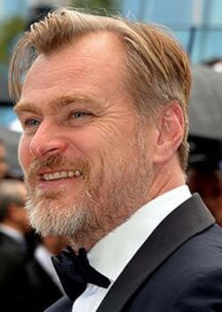

|
Com apenas sete anos de idade, Christopher Nolan já se arriscava por trás das câmeras. Utilizando-se da câmera Super 8 do pai, ele realizou vários pequenos filmes estrelados por seus brinquedos. A vontade de dirigir não passou e ele acabou se tornando um importante realizador. Formou-se em literatura na Universidade de Londres, na mesma época em que começou a realizar filmes em 16mm. Seu curta "Larceny" foi exibido no Festival de Cinema de Cambridge em 1996. Nolan estreou na direção com Following (1998), mas foi Amnésia (2000) que chamou a atenção da grande público, abrindo seu caminho para o sucesso em Hollywood. Na sequência, comandou Al Pacino, Robin Williams e Hilary Swank em Insônia (2002). Em 2005, dirigiu o filme que mudou para sempre sua história: Batman Begins. Ele investiu em um Homem-Morcego mais sombrio e realista, o que ficou ainda mais claro na continuação, Batman - O Cavaleiro das Trevas. O segundo longa rendeu um Oscar póstumo para Heath Ledger, que brilhou na pele do vilão Coringa. Com O Cavaleiro das Trevas Ressurge, fecha sua trilogia sobre o herói. Em um período "entre-Batmans" realizou A Origem e chamou a atenção pela criatividade e pela complexidade narrativa. O filme arrecadou mais de US$ 800 milhões em todo mundo e conquistou estatuetas no Oscar. |
 |
| Tenet 2020 150min |
Seguinte 1998 70min |
Dunkirk 2017 106min |
Batman Begins 2005 140min |
Amnésia 2000 114min |
| BCTR 2012 165min |
O Grande Truque 2006 130min |
Interstellar 2014 169min |
A Origem 2010 148min |
BCT 2008 152min |
O longa protagonizado por John David Washington e Robert Pattinson é, no mínimo, um dos mais contraditórios entre os fãs do diretor. Na trama, "um agente secreto embarca em uma perigosa missão para impedir o início da Terceira Guerra Mundial. Com uma dinâmica complicada demais envolvendo viagens no tempo, a produção não agradou muito o público e conta com apenas 69% de aprovação da crítica no Rotten Tomatoes.
Seguinte é, talvez, o mais desconhecido filme da lista. Marcado a estreia de Nolan como diretor, o longa acompanha um jovem escritor que segue estranhos pelas ruas de Londres em busca de inspiração. As coisas mudam quando, em uma dessas "caminhadas", ele se envolve no mundo perigoso do crime. Na produção, diferente dos filmes grandiosos que conhecemos do diretor, Nolan contou com apenas US$ 6 mil de orçamento.
Protagonizado por Tom Hardy, Fionn Whitehead, Tom Glynn-Carney e Mark Rylance, o longa é uma ótima pedida para os fãs de produções de guerra. Baseada em uma história real, a trama acompanha o resgate de soldados norte-americanos em uma praia francesa após serem cercados pelo exército nazista, durante a Segunda Guerra Mundial. A produção rendeu a primeira indicação na categoria de Melhor Direção no Oscar para Nolan.
Batman Begins é um dos trabalhos mais conhecidos do diretor. E não é para menos, o diretor conseguiu levar para as telonas uma das adaptações mais aclamadas do homem-morcego. Na produção, acompanhamos a história de origem do Batman, passando pelo assassinato dos pais de Bruce Wayne até se tornar o herói de Gotham City. O filme é protagonizado pelo ator Christian Bale e chama atenção por apresentar um lado mais sombrio de Batman.
Amnésia é a porta de entrada para os filmes "de quebrar a cabeça" de Christopher Nolan. Estrelado por Guy Pearce, o longa acompanha Leonard, um homem que está caçando o responsável pela morte de sua esposa. O único problema é que ele sofre de uma forma intratável de perda de memória, o que dificulta a sua procura pelo assassino. A produção abriu as portas para Nolan nas premiações mais renomadas e rendeu ao diretor indicações de Melhor Edição e Roteiro no Oscar de 2002.
O fim da trilogia do Batman chegou aos cinemas em 2012 e traz novos nomes para o universo do homem-morcego, incluindo Tom Hardy na pele do vilão Bane, e Anne Hathaway como Selina Kyle, a Mulher-Gato. A trama se passa oito anos após os acontecimentos de O Cavaleiro das Trevas. Depois de ficar anos em exílio, o herói precisa voltar ativa com o aparecimento do novo terrorista em Gotham.
A segunda parceria entre Nolan e o ator Christian Bale foi no filme O Grande Truque, que também conta com Hugh Jackman no elenco principal. A trama acompanha dois amigos ilusionistas e mágicos na Londres do século 19. Enquanto buscam reconhecimento na área, acabam construindo uma rivalidade obsessiva que leva a um fim trágico.
Um dos queridinhos do fãs, Interestelar é mais uma ficção científica no currículo de Christopher Nolan. No enredo, vemos Joseph Cooper, um ex-piloto da NASA que é recrutado para encontrar um novo planeta para os seres humanos viverem. Durante a expedição espacial, ele acompanha de longe o desenvolvimento de sua família por registros feitos ao longo dos anos na contagem terrestre.
Na linha "filmes para quebrar a cabeça", A Origem é mais uma produção de Christopher Nolan que coloca os telespectadores para pensar. Muito bem recebido pelo público e pela crítica, o longa foi indicado a oito Oscars, incluindo Melhor Filme. Na história, acompanhamos Dom Cobb, um ladrão com a habilidade de roubar segredos do inconsciente, durante o sono. "Impedido de retornar para sua família, ele recebe a oportunidade de se redimir ao realizar uma tarefa que parece impossível: plantar uma ideia na mente do herdeiro de um império", aponta a sinopse.
Batman: O Cavaleiro das Trevas foi o longa que consagrou Christopher Nolan entre os fãs da DC (e de quadrinhos de heróis, no geral). Isso porque, além de ser uma megaprodução, o filme traz a elogiada performance de Heath Ledger como Coringa, um dos vilões mais amados dos fãs. ] O ator recebeu um prêmio póstumo na categoria de Melhor Ator Coadjuvante no Oscar. No Rotten Tomatoes, a produção tem aprovação de 94% e é descrita como "sombrio, complexo e inesquecível, O Cavaleiro das Trevas é um sucesso não apenas como um filme divertido de quadrinhos, mas também como uma saga de crime ricamente emocionante."